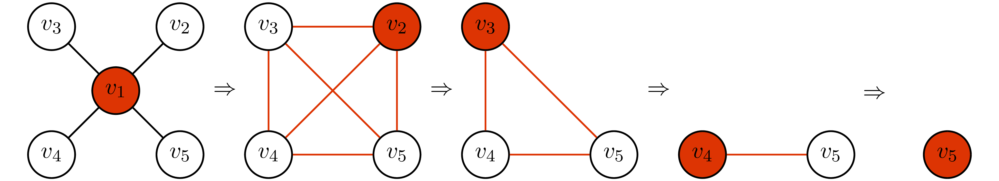
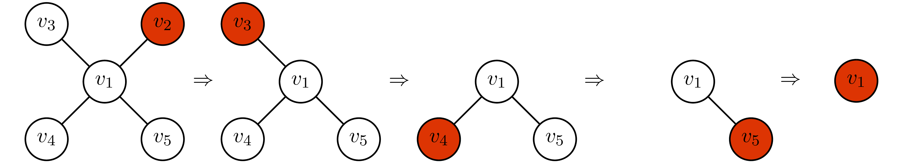
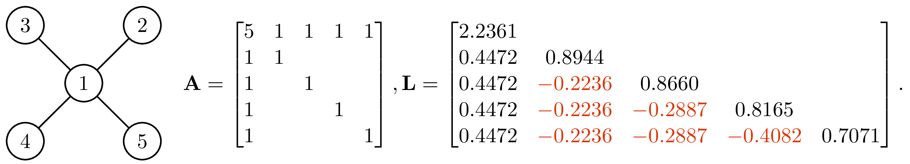
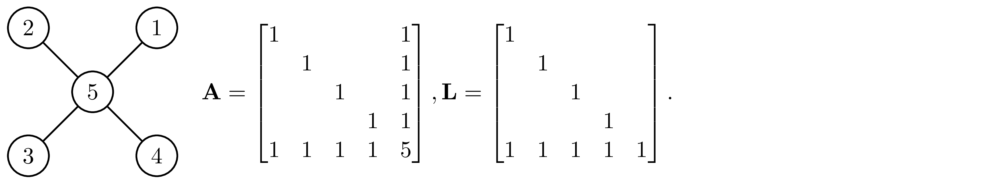
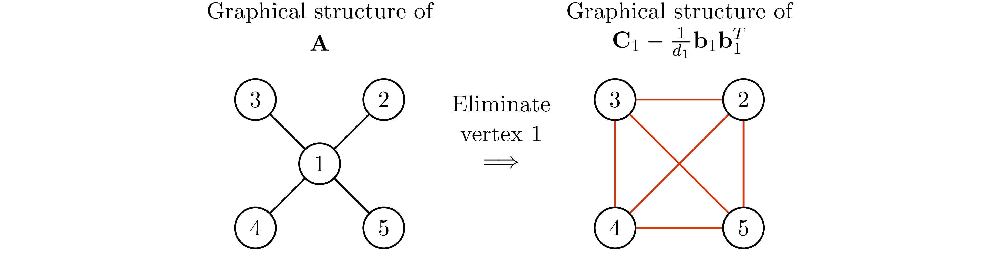
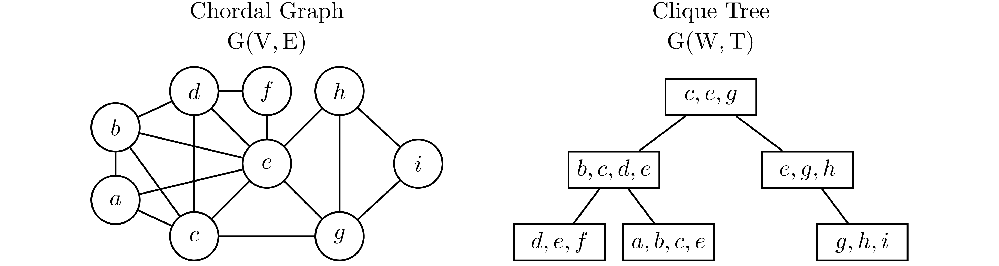

Given a standard form semidefinite program (SDP) \begin{align}\label{eq:sdp_primal} \begin{split} \min_{\X} \quad & \C\bullet\X \\ \textrm{s.t.} \quad & \A_i\bullet\X=b_i \quad i=1,\ldots,m \\ \quad & \X \succeq 0 \end{split} \end{align} and its dual \begin{align}\label{eq:sdp_dual} \begin{split} \max_{\y,\ \S} \quad & \b^\mathrm{T}\y\\ \textrm{s.t.} \quad & \sum_{i=1}^{m}y_i\A_i+\S=\C\qquad\quad\ \ \\ \quad & \S \succeq 0, \end{split} \end{align} where $\A_i,\ \C,\ \X,\ \S\in\mathrm{S^n}$, $\b,\ \y\in\real^n$ and $\C\bullet\X=\mathrm{Tr}(\C\X)$. The fundamental difficulty of solving (\ref{eq:sdp_primal}) is that the variable $\X$ is generally dense, even in the case when $\C$ and $\A_i$'s are sparse. When $\X$ is a dense matrix, the number of variables we need to solve is $n(n+1)/2$. It might seem straightforward to exploit the sparsity pattern in the dual problem (\ref{eq:sdp_dual}), where the slack variable $\S$ has the (aggregated) sparsity pattern of $\C,\ \A_1,\ldots ,\A_m$. Nonetheless, compute the gradient of log-barrier function $\phi(\S)=\log\det{\S}$ requires the inverse of $\S$, which is generally a dense matrix.
Although SDP can be efficiently solved by interior point method (IMP) in just a few iteration, however, at each iteration of IMP, we have to solve a normal equation \[\H\Delta\y=\r,\] to evaluate the Newton step $\Delta\y$. In general, $\H\in\mathrm{S^m}$ is fully dense; therefore $O(m^3)$ time is required to form $\H$ and solve $\Delta\y$, this result in $O(n^6)$ time complexity per-iteration because $n\leq m^2$ and requires $O(n^{6.5}\log(1/\epsilon))$ time to obtain the $\epsilon$-accuracy solution using IMP.
When the SDP is chordal sparse. That is, the (aggregated) sparsity pattern of $\C,\A_1,\ldots,\A_m$ is chordal sparse. We can achieve lower computational complexity to form $\H$ and solve $\H\Delta\y=\r$ at each iteration of interior point method. In this blog post, we elaborate two methods to exploit chordal structure in SDP proposed by Martin S. Andersen in 2010 [1] and Richard Y. Zhang in 2020 [2].
Notation: Uppercase (lowercase) bold face letters indicate matrices (column vectors). $A_{ij}$ denotes the $(i,j)^{th}$ element of $\A$. $\A \succeq 0$ designates $\A$ as a symmetric positive semidefinite matrix. ${\rm Tr}(\cdot)$ denotes the trace of the matrix. $\mathrm{G(V,E)}$ denotes a graph with vertex set $\mathrm V$ and edge set $\mathrm E\subseteq \mathrm{V\times V}$. $\adj(v)$ denotes a set of adjacent vertices of vertex $v$. $\mathrm{S}^{n}$ is the set of symmetric matrices of order $n$. $\mathrm{S_+^n}$ and $\mathrm{S_{++}^n}$ are the sets of positive semidefinite, positive definite matrices, respectively. $\mathrm{S_E^n}$ is the subspace of $\mathrm{S^n}$ of matrices with sparsity pattern $\mathrm E$. $\mathrm{S_{E,+}^{n}}$ and $\mathrm{S_{E,++}^{n}}$ are the sets of positive semidefinite and positive definite matrices in $\mathrm{S_E^n}$. $\mathrm{P_E(S_+^n)}=\left\{\mathrm{P_E}(\X) \mid \X \succeq 0\right\}$ is the cone of matrices in $\mathrm{S_E^n}$ that have a positive semidefinite completion, and $\mathrm{P_E(S_{++}^n)}$ is the interior of $\mathrm{P_E(S_+^n)} .$ The functions $\phi(\cdot)$ is logarithmic barrier functions for $\mathrm{S_{E,+}^{n}}$.
In many applications, we can break the underlying problems into solving a series of sparse normal equations \[\A\x=\b,\] where $\A$ is sparse and $\A\succ 0$. A standard approach to solve $\x$ is to perform Cholesky factorization on $\A=\L\L^T$, then solve $\L\d=\b$ following by $\L^T\x=\d$. Since $\L$ is a lower triangular matrix, solving $\L\d=\b$ and $\L^T\x=\d$ only requires back substitution, the computational complexity to solve $\x$ is cubic time if $\L$ is dense, but achieve linear time if $\L$ is sparse. In this section, we will show that if $\A$ has chordal structure, then its sparsity structure remains the same after Cholesky factorization.
To understand chordal structure, one must learn the concept of vertex elimination. Given an undirected graph $\mathrm{G(V,E)}$, the vertex elimination is defined as follow.
- Pick any vertex $v\in\mathrm V$ and remove it from the graph.
- Connect all the neighbors of $v$ together.
- Repeat step 1 and 2 until $\mathrm V=\{\emptyset\}$.
The number of edges introduced during the process of vertex elimination depends on the order of elimination.
Consider a star graph
Case 1: elimination order $=(v_1\to v_2\to v_3\to v_4\to v_5)$
Case 2: elimination order $=(v_2\to v_3\to v_4\to v_5\to v_1)$
In case 1, we add $6$ edges during the process of elimination. However, in case 2, we don have to add any edges. We call the elimination order that does not introduce new edges during the vertex elimination the perfect elimination ordering.
he idea of vertex elimination is tightly related to Cholesky factorization. In fact, if the graphical structure of $\A$ has the perfect elimination ordering, the Cholesky factor of $\A$ will have the same structure if rows and columns of $\A$ are arranged in perfect elimination order. This idea is illustrated as follow.
Using the same graph and elimination order in Example 1, and let the number in each vertex denotes the order of elimination.
Case 1: rows and columns of $\A$ are not in perfect elimination ordering
Case 2: rows and columns of $\A$ are in perfect elimination ordering
The element in matrix that were zeros in $\A$ but become non-zero in $\L$ is called fill-in (the elements marked in red in case 1). In case 1, the Cholesky factor has 6 fill-in and become fully dense. However, if we permute the $\A$ into the perfect elimination order as shown in case 2, the Cholesky factor has no fill-in.
Partition $\A$ and compute its Schur complement, we have
\begin{align*} \A=\begin{bmatrix} 5 & 1 & 1 & 1 & 1\\ 1 & 1 & & & \\ 1 & & 1 & & \\ 1 & & & 1 & \\ 1 & & & & 1 \end{bmatrix}=\underbrace{\begin{bmatrix} 1 & & & & \\ 0.2 & 1 & & & \\ 0.2 & & 1 & & \\ 0.2 & & & 1 & \\ 0.2 & & & & 1 \end{bmatrix}}_{\L_1}\underbrace{\begin{bmatrix} 5 & & & & \\ & 0.8 & \color{#DD3403}-0.2 & \color{#DD3403}-0.2 & \color{#DD3403}-0.2 \\ & \color{#DD3403}-0.2 & 0.8 & \color{#DD3403}-0.2 & \color{#DD3403}-0.2 \\ & \color{#DD3403}-0.2 & \color{#DD3403}-0.2 & 0.8 & \color{#DD3403}-0.2 \\ & \color{#DD3403}-0.2 & \color{#DD3403}-0.2 & \color{#DD3403}-0.2 & 0.8 \end{bmatrix}}_{\D_1}\begin{bmatrix} 1 & & & & \\ 0.2 & 1 & & & \\ 0.2 & & 1 & & \\ 0.2 & & & 1 & \\ 0.2 & & & & 1 \end{bmatrix}^T. \end{align*}The graphical structure of $\C_1-\frac{1}{d_1}\b_1\b_1^T$ is the graphical structure of $\A$ after eliminating vertex $1$.
Notice that not every graph has perfect elimination ordering, and the perfect elimination ordering (if exists) is not unique in general. Graphs that have the perfect elimination ordering are called the chordal graph.